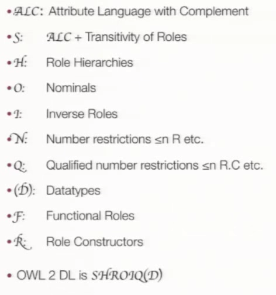

Reasoning in OWL
Einführung in Description Logic und dem
Tableau Algorithm mit ALC
Reasoning
ist die Möglichkeit auf einer Menge von
Fakten und Axiomen mittels Software
logische Schlüsse zu schließen
benötigt Wissensrepräsentation von
Regeln und Faktenwissen
Semantische Netze
- gut verständlich
Informationsgewinn durch Traversieren der Kanten - einfach erweiterbar
gewinnt schnell an Komplexität
Einschränkungen fehlen
logische Schlussfolgerung nur bedingt möglich
(Learning Networks, Exceutable Networks, Assertional Networks)
Ontologien
- streng axiomatisch aufgebaut
und formalisiert
bilden Grundlage für weitreichende logische Ableitungsregeln - Konzept des gemeinsamen Verständnis
erhält durch Implementation (W3C:OWL DL) ein
logischen Sprachkonstrukt - Description Logic

OWL - Web Ontology Language
- Erweiterung zu RDFS hinzufügen von verschiedenen Constraints und DL
- Repräsentationsstandard XML Turtle ist eine Alternative
- Entwicklungen von Untersprachen
- OWL Lite künstliche Limitierung für Altsysteme, Constraints fehlen
- OWL DL Ausreichende Ausdrucksmöglichkeit um noch performant reason zu können
- OWL Full Volles Sprachkonzept von DL enthalten
Description Logic
- Warum nicht FOL?
- sehr Ausdrucksstark
- daher komplex und unübersichtlich
- schwierig im theoretischen Beweis
- Prädikatenlogik ist keine Markupsprache
- angemessene Wahl von Fragmenten pro DL
- DLs sind Fragmente aus der FOL und bieten
trotzdem genug Ausdruck - DLs sind entscheidbar
- Für die Fragmente der FOL existieren
mengentheoretische Ausdrücke für die Ausführung - OWL DL 2 basiert auf \(SHROIQ(D)\)
$$ALC$$
besteht aus Classes, Roles/Properties, Individuals, Atomic Types, Constructors
Atomic Types:
$$Student(Christian)$$
$$Lecture(DBW)$$
$$visitsLecture(Christian, DBW)$$
Constructors :
Negation \(\neg\), Konjunktion \(\sqcap\), Disjunktion \(\sqcup\) und Quantoren
\(\forall R.C\)
\(\exists R.C\)
Class Inclusion:
$$Professor \sqsubseteq FacultyMember$$
$$\forall x Professor(x) \rightarrow FacultyMember(x)$$
Class Equivalence:
$$Professor \equiv FacultyMember$$
$$\forall x Professor(x) \leftrightarrow FacultyMember(x)$$
Complex Classes:
$$Professor \sqsubseteq (Person \sqcap Employee) \sqcup (Person \sqcap Student)$$
$$\forall x Professor(x) \rightarrow (Person(x) \wedge Employee(x)) \vee (Person(x) \wedge Student(x))$$
Allquantor:
"Jede Prüfung muss immer von einem Professor beaufsichtigt werden"
$$Examination \sqsubseteq \forall hasSupervisor.Professor$$
$$\forall x Examination(x) \rightarrow (\forall y hasSupervisor(x, y) \rightarrow Professor(x))$$
Existenzquantor:
"Jeder Prüfung muss von mindestens einer Person beaufsichtigt werden"
$$Examination \sqsubseteq \exists hasSupervisor.Person$$
$$\forall x Examination(x) \rightarrow (\exists y hasSupervisor(x, y) \rightarrow Person(x))$$
Wissensrepräsentation
Bestehend aus ABox und TBox
TBox (Terminologisches Wissen)
beinhaltet alle Class Definitionen mit \(C \equiv D\) und \(C \sqsubseteq D\)
$$Human \sqsubseteq \exists parentOf.Human$$
$$Orphan \equiv Human \sqcap \neg \exists hasParent.Alive$$
ABox (Wissen um Individuen)
beinhaltet alle Individuals \(C(a)\) und Rollen \(R(a,b)\)
$$Orphan(harryPotter)$$
$$hasParent(harryPotter, jamesPotter)$$

Closed World Assumption
In einer geschlossenen Welt ist alles "falsch", was nicht
explizit als wahr, bekannt und eingetragen ist.
Open World Assumption
Die OWA hat als Grundannahme, dass eine Wissensbasis immer potentiell unvollständig ist.
Fördert Wiederverwendung von Wissen, da man sie ergänzen kann.
Komplexer zu behandeln -> kommt aber der Realität näher
Tableaux Algorithm
ist ein Beweisalgorithmus - Er beweist die Korrektheit einer Aussage
indem er die Negation einer Aussage auf Wiederspruch prüft
Beispiel aus der Aussagenlogik:
\((\neg p \vee \neg q) \wedge (\neg p \vee q ) \wedge \neg q\)
negiert: \(( p \wedge q) \vee ( p \wedge \neg q ) \vee q\)
Regeln
1. \( \wedge \) wird zu einer Baumkante
2. \( \vee \) wird eine Aufsplittung
3. Letztes Blatt wird zum Anfang traversiert und geprüft
Prüfbaum

Anwendung in ALC
Jede Art der Anfrage an einen Reasoner lässt sich in eine Aussage für den Tableaux Algorithmus umwandeln
NegationsNormalForm
Ersetze C \(\equiv\) D durch C \(\sqsubseteq\) D und D \(\sqsubseteq\) C
Ersetze C \(\sqsubseteq\) D durch \(\neg\)C \(\sqcup\) D
Anwendung in ALC
NNF
\(P \sqsubseteq (E \sqcap U) \sqcup \neg ( \neg E \sqcup D)\)
\(\neg P \sqcup (E \sqcap U) \sqcup \neg( E \sqcap \neg D)\)
Probleme?
Terminierung
\(SHROIQ(D)\) implementierung
Performance
OWL Reasoner
Welche Implementierungen gibt es und wie kann man sie einsetzen?
Alternatives Markup
XML/RDF als Standard
Turtle, N-Triples, N-Quads, JSON-LD, TriG and TriX
Triplestore
- Native Store
Jena TDB, Sesame, 4Store ... - RDBMS Store
Jena SDB, IBM DB2, Virtuoso ... - NoSQL Store
CumulusRDF
Integrierte Reasoner
begrenzte OWL DL Unterstützung
Externe Reasoner
fast vollständige OWL DL Unterstützung
Durch OWL API auch mit anderen Stores einsetzbar